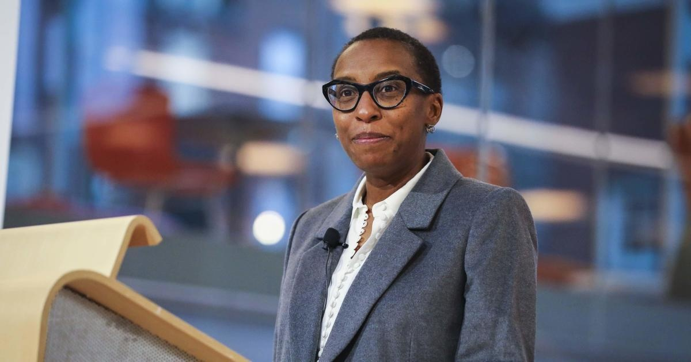

Harvard president Claudine Gay resigns amid controversyClaudine Gay, the president of Harvard University, resigned from her position on Tuesday after just six months in the role. Gay has recently come under over her handling of antisemitism on campus since the start of the Israel-Hamas war, as well as accusations of plagiarism in some of her past academic writings. She announced her decision to resign in a letter addressed to the Harvard community. "It is with a heavy heart but a deep love for Harvard that I write to share that I will be stepping down as president," Gay wrote in the letter. "This is not a decision I came to easily. Indeed, it has been difficult beyond words because I have looked forward to working with so many of you to advance the commitment to academic excellence that has propelled this great university across centuries." But she said that after consultation with members of the Harvard Corporation — the university's leading governing board — "it has become clear that it is in the best interests of Harvard for me to resign so that our community can navigate this moment of extraordinary challenge with a focus on the institution rather than any individual." Gay faced widespread criticism in recent months for her on how Harvard has responded to rising antisemitism since the Oct. 7 Hamas attack on Israel sparked protests, with impacts seen especially on college campuses in the United States. Republicans, including GOP conference chair Rep. Elise Stefanik, called for her resignation even as members of the Harvard faculty . Gay later faced allegations of plagiarism, which the school said it was looking into. In a separate statement, the Harvard Corporation acknowledged, "These past several months have seen Harvard and higher education face a series of sustained and unprecedented challenges." The university leaders said they accepted her resignation "with sorrow." "While President Gay has acknowledged missteps and has taken responsibility for them, it is also true that she has shown remarkable resilience in the face of deeply personal and sustained attacks. While some of this has played out in the public domain, much of it has taken the form of repugnant and in some cases racist vitriol directed at her through disgraceful emails and phone calls. We condemn such attacks in the strongest possible terms," the statement said. Gay was Harvard's first Black president and second woman president. Harvard announced in December 2022 that to serve as the university's next president, and she officially took office last July. Her brief tenure was the shortest in the school's history, according to the student newspaper, the Harvard Crimson. Last month, University of Pennsylvania president Liz Magill in the wake of the congressional hearing, where she testified along with Gay and MIT president Sally Kornbluth. All three leaders drew criticism for failing to clearly state whether calls for genocide against Jewish people would violate their university's policies. "My deep sense of connection to Harvard and its people has made it all the more painful to witness the tensions and divisions that have riven our community in recent months, weakening the bonds of trust and reciprocity that should be our sources of strength and support in times of crisis," Gay wrote in her resignation letter. "Amidst all of this, it has been distressing to have doubt cast on my commitments to confronting hate and to upholding scholarly rigor—two bedrock values that are fundamental to who I am—and frightening to be subjected to personal attacks and threats fueled by racial animus." Her letter did not reference the plagiarism accusations. Gay responded to them in a previous statement to the Boston Globe, saying, "I stand by the integrity of my scholarship." In its December statement voicing support for Gay continuing as president after the congressional hearing, the Harvard Corporation the accusations brought to the board in October prompted a review of her 1997 dissertation, which "revealed a few instances of inadequate citation." "While the analysis found no violation of Harvard's standards for research misconduct, President Gay is proactively requesting four corrections in two articles to insert citations and quotation marks that were omitted from the original publications," the statement said. New plagiarism accusations against Gay surfaced in the conservative online publication The Washington Free Beacon, which has targeted her for weeks. Alan M. Garber, Harvard's provost and chief academic officer will serve as the school's interim president until a permanent replacement is selected, the governing board said. Garber is an economist and physician who has served as provost for 12 years. Gay, who was previously the dean of the Faculty of Arts and Sciences and a professor of government and of African and African-American Studies, said that she will remain on the faculty at Harvard. for more features. |
 |